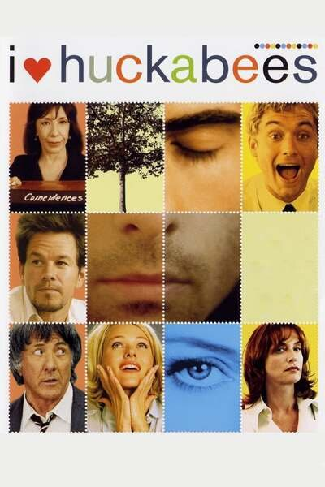

გულთა დამპყრობელები
I Heart Huckabees

- IMDb: 6.5
- გამოშვების წელი: 2004
- ქვეყანა:
- ჟანრი: ფილმი, კომედია
- ხანგძლივობა:
- რეჟისორი: დევიდ ო. რასელი
- მსახიობები: ნაომი უოთსი, დასტინ ჰოფმანი, ჯუდ ლოუ, ჯეისონ შვარცმანი, ქევინ დანი, მარკ უოლბერგი, ლილი თომლინი, იზაბელ იუპერი, აჯელა გრილო, ხერ დუანი, დარლენ ხანტი, ბენი ერნანდეზი, რიჩარდ აპელი
ჯეფების საოჯახო წყვილმა გადაწყვიტა დეტექტივები გამხდარიყვნენ პირადი ემოციური პრობლემების მოგვარების სფეროში. მათი პირველი კლიენტი – ალბერტ მარკოვსკია, რომელსაც ცნობილ საბითუმო ქსელში მომავალი კარიერის შიშები სტანჯავენ. გამოძიების პროცესში ჯეფები ეცნობიან ალბერტის ახლობლებს და ხვდებიან, რომ მათ ყველას მათი დახმარება ესაჭიროებათ...